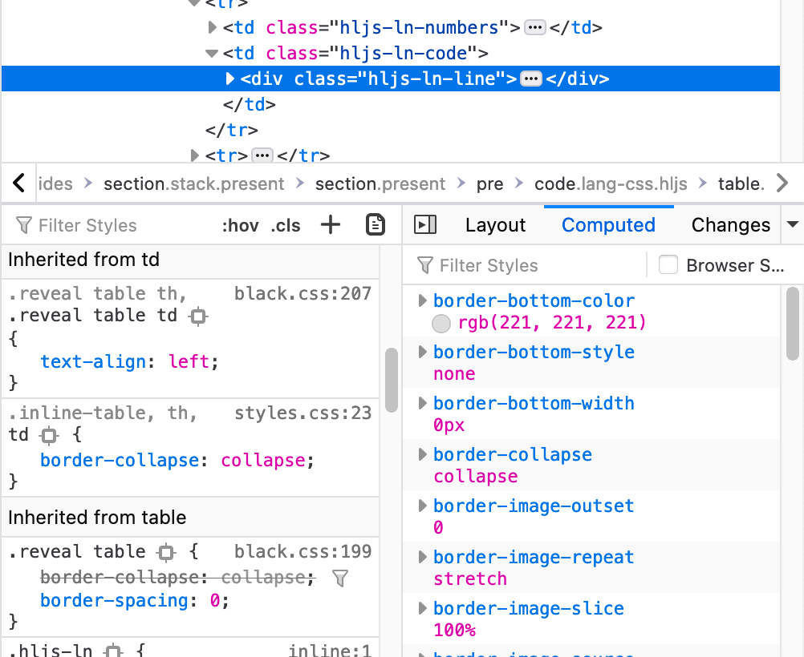

JavaScript básico
Agenda
- Breve intro a HTML
- Breve intro a CSS
- Variables
- Valores y estructuras de datos
- Operaciones aritméticas
- Operaciones lógicas
- Expresiones y sentencias
- Condicionales
- Loops
- Funciones
- Alcance
- Manipulación del DOM
- Eventos
Intro a HTML
Qué es HTML?
- HTML (Hypertext Markup Language) no es un lenguaje de programación
- HTML es definido como un lenguaje de maquetado web
- Consiste de elementos que encuadran contenido que luego son interpretados por un navegador y se muestran de cierta forma
-
Ejemplos: <p> , <b>, <h1>
Hoy vamos a aprender sobre HTML
Composición de un elemento HTML
Esto contiene un párrafo
- La etiqueta <p> establece cuando comienza, mientras que </p> establece cuando termina
- Esto contiene un párrafo es el contenido dentro de dicha etiqueta
- A las etiquetas de comienzo y fin junto con su contenido se los llama Elemento
Atributos de un elemento HTML
- Los atributos brindan información adicional que no se quiere mostrar dentro del contenido
- En el ejemplo, class es el nombre del atributo y access-text es el valor del atributo.
Esto contiene un párrafo
Anidación de elementos
- Los elementos se pueden anidar, es decir, colocar elementos dentro de otro elemento.
- Se debe siempre cerrar las etiquetas anidadas en orden inverso al que comienzan. Es decir, en el ejemplo debajo, el tag <em> cierra primero ya que fue el último tag en comenzar.
Mi texto en negritas mi texto en negritas y enfatizado
Listas
- Las listas forman parte de nuestras vidas. Desde una lista de supermercado hasta los temas de un examen que tenemos que estudiar
- Dentro de las listas tenemos dos tipos: desordenadas y ordenadas
Listas desordenadas
- En este tipo de listas, no importa el orden de los elementos a mostrar
- Yogurt
- Huevos
- Pan
- Yogurt
- Huevos
- Pan
Listas ordenadas
- En este tipo de listas, si importa el orden
- Subirse al ómnibus
- Pagar el boleto
- Tomar asiento
- Subirse al ómnibus
- Pagar el boleto
- Tomar asiento
Imagen en HTML
- Para utilizar imágenes, usamos el tag img
- alt es requerido y especifica una alternativa a la imagen en caso de no poder mostrarla

Links
- En HTML los links son llamados hipervínculos o hyperlinks
- Al seleccionar un link, este te redirige a otro documento
- Al poner el mouse sobre un link, el puntero cambiará de una flecha a una mano
- target especifica dónde abrir el nuevo documento
Toy Story
Bloques
- Para organizar el contenido y poder darle de manera sencilla estilo, podemos usar contenedores:
- <div>, <span>
Esto es un texto
Esto es un texto
Intro a CSS
Qué es CSS?
- CSS (Cascading Style Sheets) es un lenguaje de stylesheet
- Se utiliza para aplicar colores, tamaños y más estilos a las páginas en HTML
- Se basa en conjuntos de reglas que se aplican a grupos de elementos de HTML mediante selectores
-
Ejemplo:
div { background-color: #FF0000 }
¿Cómo insertar código CSS?
- Código "inline":
- Código directo:
-
En archivo `.css`:
Fundamentos de CSS
Composición de una regla de CSS:

Selectores básicos
Texto
/* estilos.css */
/* tags */
body, div, p, h1, h2, h3, span, img { display: none; }
/* ids */
#caja-roja { background-color: red; }
/* classes */
.texto-grande { font-size: 30px; }
Selectores Compuestos
Texto
Texto
/* estilos.css */
.caja.seccion p { font-size: 30px; }
Reglas básicas
/* estilos.css */
div {
margin: 0 40px 10px 20px;
padding: 10px;
background-color: red;
width: 200px;
height: 100px;
border: 1px solid black;
border-radius: 5px;
}
h1 {
font-size: 30px;
color: blue;
line-height: 2;
font-weight: bold;
font-family: Helvetica;
}
Inspeccionar CSS
Recursos útiles
- CSS básico por Mozzila
- Flexbox Froggy: distribución y posicionamiento de elementos
Variables
let miVariable;
let miVariable = "un valor";
Las variables en JavaScript no están asociadas directamente con ningún tipo de valor en particular, y a cualquier variable se le pueden asignar (y reasignar) valores de todos los tipos.
let foo = 42; // foo es un número
foo = 'bar'; // foo es un string
foo = true; // foo es un boolean
A diferencia de las variables, una constante no puede cambiar su valor posteriormente, por lo que se debe especificar su valor en la misma sentencia en la que se declara.
const foo = 7; // foo es una constante con el número 7
foo = 20; // lanzará un error
Valores y estructuras de datos
JavaScript posee 6 tipos de datos primitivos
- Undefined
- Boolean
- Number
- String
- BigInt
- Symbol
Undefined
Una variable a la que no se le ha asignado un valor tiene el valor indefinido
let miVariable;
console.log(miVariable); // imprime undefined
Boolean
Representa una entidad lógica y puede tener dos valores: verdadero y falso
let miVariable1 = true;
console.log(miVariable1); // imprime el valor booleano true
let miVariable2 = false;
console.log(miVariable2); // imprime el valor booleano false
Number
Números entre -(253 − 1) y 253 − 1. Adicionalmente, JS cuenta con 3 tipos simbólicos: +Infinity, -Infinity, y NaN ("Not a Number").
let miVariable = 7;
console.log(miVariable); // imprime el número 7
String
Sirve para representar una cadena de caracteres. La longitud del string está dada por la cantidad de elementos que lo componen.
let miVariable = "Hola mundo!";
console.log(miVariable); // imprime Hola mundo!
Objetos
En JavaScript, un objeto es una estructura de datos que almacena claves y valores.
// Opción 1
let auto = new Object();
auto.marca = 'Ford';
auto.modelo = 'Mustang';
auto.año = 1969;
// Opción 2
let auto = {
marca: 'Ford',
modelo: 'Mustang',
año: 1969
};
Objetos
Para acceder a los valores del objeto, lo podemos hacer utilizando objecto.nombre_atributo ó objecto['nombre_atributo']
console.log(auto.marca); // Imprime 'Ford'
console.log(auto['marca']); // Imprime 'Ford'
console.log(auto['color']); // Si la clave no existe, imprime undefined
Arreglos
Los arreglos son estructuras ordenadas que representan listas o collecciones de valores.
let frutas = ['Manzana', 'Banana']
console.log(frutas) // Imprime ['Manzana', 'Banana']
Arreglos
Un arreglo en JavaScript puede contener muchos tipos de datos distintos al mismo tiempo.Para acceder a los valores, debemos indicar la posición del elemento que deseamos.
IMPORTANTE: El primer elemento ocupa la posición 0.
let arreglo = ['Manzana', 'Banana', 1, false]
console.log(arreglo[0]) // Imprime 'Manzana'
console.log(arreglo[1]) // Imprime 'Banana'
console.log(arreglo[2]) // Imprime 1
console.log(arreglo[3]) // Imprime false
console.log(arreglo.length) // Imprime 4
Operaciones aritméticas
Como todos los lenguajes de programación, JavaScript permite ejecutar operaciones aritméticas con sus datos.
2 + 2; // 4
2 - 1; // 1
3 * 2; // 6
4 / 2; // 2
2 + 2; // 4
2 - 1; // 1
3 * 2; // 6
4 / 2; // 2
Operaciones de asignación
Podemos también combinar todas las operaciones aritméticas con asignaciones
let suma = 2;
suma += 2; // suma = suma + 2 // suma = 4
let resta = 2;
resta -= 1; // resta = resta - 1 // resta = 1
let producto = 3;
producto *= 2; // producto = producto * 2 // producto = 6
let division = 4;
division /= 2; // division = division / 2 // division = 2
Comparación
// Mayor y menor
3 > 2; // true
3 < 2; // false
// Mayor o igual y menor o igual
4 >= 5; // false
4 <= 5; // true
// Igualdad
5 == 5; // true
5 != 6; // true
// Igualdad estricta
5 === 5; // true
5 !== 5; // false
5 == '5'; // true
5 === '5'; // false
let año = 2021;
'Les deseo un feliz ' + año + '!'; // Les deseo un feliz 2021!
Operaciones lógicas
Los operadores más conocidos son AND, OR y NOT.
| A | B | A AND B |
|---|---|---|
| V | V | V |
| F | V | F |
| V | F | F |
| F | F | F |
| A | B | A OR B |
|---|---|---|
| V | V | V |
| F | V | V |
| V | F | V |
| F | F | F |
| A | NOT A |
|---|---|
| V | F |
| F | V |
AND
Esta operación retorna el valor verdadero solo si todos sus operandos tiene el valor verdadero.
const a = 3;
const b = -2;
console.log(a < 0 && b > 0); # Imprime false
console.log(a < 0 && b < 0); # Imprime false
console.log(a > 0 && b > 0); # Imprime false
console.log(a > 0 && b < 0); # Imprime true
OR
Esta operación retorna el valor verdadero si alguno de sus operandos tiene el valor verdadero.
const a = 3;
const b = -2;
console.log(a < 0 || b > 0); # Imprime false
console.log(a < 0 || b < 0); # Imprime true
console.log(a > 0 || b > 0); # Imprime true
console.log(a > 0 || b < 0); # Imprime true
NOT
Esta operación retorna el valor contrario a la condición que es aplicado.
const a = 3;
console.log(a < 0); # Imprime false
console.log(!(a < 0)); # Imprime true
console.log(a > 0); # Imprime true
console.log(!(a > 0)); # Imprime false
Circuito corto
Teniendo en cuenta las tablas de verdad, y que las operaciones lógicas son evaluadas de izquierda a derecha, JavaScript ejecuta estas operaciones utilizando lo que llamamos "circuito corto".Básicamente las reglas son las siguientes:
- false && (cualquier valor) evalúa a "false".
- true || (cualquier valor) evalúa a "true".
Expresiones y Sentencias
Expresiones
Una expresión es una unidad de código que se puede evaluar a un valor, o sea, produce un valor.-
Aritméticas: evalúan a un número
10; 10+13; - Strings: Evalúan a un string
'hola'; 'hola ' + 'mundo'; - Lógicas: Evalúan a un valor booleano (true o false)
10 > 9; // true 10 < 20; // false true; 20 === 20 && "10" === 10; // false !true; // false
'hola mundo'; // Un literal string
23; // Un literal numérico
true; // Booleano en true
function; // Palabra clave que define una funcion
this; // Palabra clave que evalua al objeto actual
i = 10;
total = 0;
Sentencias
Una sentencia puede estar formada por múltiples líneas o una sola. Las hay de distintos tipos:Control de flujo
-
Un bloque
{ sentencia_1; sentencia_2; } - break
- if...else
- switch
- throw
- try...catch
-
Empty
;
Declaraciones
- var
- let
- const
Iteraciones
- do...while
- for
- for each...in
- for...in
- for...of
- while
Funciones
(entre otras)
- function
- return
- class
Otros
- debugger: Permite debuggear la aplicación mientras se está ejecutando. Hace que la ejecución se detenga en la sentencia debugger y nos permite examinar el código paso a paso.
- export
- import
Condicionales
Las declaraciones condicionales nos permiten realizar diferentes acciones basadas en diferentes condiciones y determinarán si el bloque de código a continuación es o no ejecutado.
- if
- else
- else if
- switch
If: El código se ejecutará si una condición especificada es verdadera
if (dia == 'Sabado') {
console.log('Woohoo');
}
Si el valor de la variable dia es "Sabado" se imprimirá el texto "Woohoo" en pantalla. En caso de no cumplirse la condición, el código no se ejecutará.
Else: se ejecutará si la condición es falsa
if (dia == 'Sabado') {
console.log('Woohoo');
} else {
console.log('Ya falta menos!');
}
Si el valor de la variable dia es distinto a "Sabado" se imprimirá "Ya falta menos!" en pantalla.
Else if: especifica una nueva condición para probar, si la primera condición es falsa
if (dia == 'Sabado') {
console.log('Woohoo!');
} else if (dia == 'Lunes'){
console.log(😬);
} else {
console.log('Ya falta menos!');
}
Si el valor de la variable dia es distinto a "Sabado" se evaluará el else if. Si el valor de dia es igual a "Lunes" se ejecutará el código especificado en el else if. (la sentencia else no sera ejecutada).
Switch: especifica bloques alternativos de código a ejecutar.
switch(dia) {
case 'Lunes':
console.log(🥱🧉☕️);
break;
case 'Sabado':
console.log(🥳);
break;
default:
console.log(👩💻👨💻);
}
Para la variable dia se evaluan los bloques del switch y se ejecutará el código correspondiente a el caso verdadero. Para el escenario donde ninguna condición se cumple se ejecutará el codigo situado en default.
Loops
Los loops permiten ejecutar un bloque de código varias veces.
Esta cantidad puede ser determinada numéricamente
o dada una condición.
Típicamente suelen ser utilizados para recorrer arreglos.
- for
- while
For:
En este ejemplo la sentencia for itera sobre una variable numérica i comenzando en el valor 0 e incrementara su valor en cada iteración.
const frutas = ['frutilla', 'manzana', 'banana', 'naranja'];
let i;
for (i = 0; i < frutas.length; i++) {
console.log(frutas[i]);
}
Para cada iteración se imprime en pantalla el valor de la posición i en el array de frutas. La salida tendrá el siguiente orden: "frutilla", "manzana", "banana", "naranja" y se detendrá cuando i sea menor a 4. Lo que significa que ya hemos recorrido el array completo.
Pasos en la iteración:
for(inicializacion; condicion; actualizar) {
// codigo a ser ejecutado
}
- Inicialización: se inicializa y/o declara la variable de iteración.
- Evaluar la condición. (podra ser verdadera o falsa)
- Actualizar, se actualiza el valor de la variable inicializada en el primer paso, cuando la condición es verdadera.
- La condición se evalúa nuevamente y el proceso continúa hasta que la condición sea falsa.
While
Esta sentencia ejecutará un bloque de código siempre que se cumpla una condición especificada. Cuando esta condición sea falsa, el código no se ejecutará nuevamente.
while (condicion) {
// codigo a ser ejecutado
}
Pasos en la iteración:
let i = 1;
while (i < 10) {
console.log("El número es:" + i);
i++;
}
- Se evalua la condición inicial i < 10 en caso de ser verdadera se ejecuta el código. En caso de ser falsa el código dentro del while no será ejecutado.
- Si la condición es verdadera, se mostrará el valor de i en pantalla y luego será incrementado.
- Se vuelve a evaluar la condición.
Funciones
Una función es un "subprograma" que puede ser llamado por código externo (o interno). Se compone de una secuencia de declaraciones, que conforman el llamado cuerpo de la función. Se pueden pasar valores a una función, y la función puede devolver un valor.
Para devolver un valor específico distinto del predeterminado, una función debe tener una sentencia return, que especifique el valor a devolver.
Los parámetros en la llamada a una función son los argumentos de la función. Son valores que se pasan al invocarla y para usar dentro de ella.
function nombre(param1, param2, [...]) {
instrucciones
}
Ejemplos
function hola(nombre) {
const saludo = "hola, " + nombre;
return saludo;
}
hola("maria"); // retorna "hola, maria"
function multiplicar(num1, num2) {
const total = num1 * num2;
return total;
}
multiplicar(4, 6); // retorna 24
El operador () invoca la función
Usando el ejemplo de la función multiplicar:
Si la usamos así, invocamos al objeto de la función:
multiplicar; // invocamos al objeto funcion
Si la usamos así, invocamos al resultado de la función:
multiplicar(4, 6); // invocamos al resultado de la funcion
Alcance
Si una variable u otra expresión no está "en el alcance actual", entonces no está disponible para su uso.
function ejemplo() {
let x = "declarada dentro de la función"; // x solo se puede utilizar en ejemplo
console.log(x);
};
console.log(x); // error
let x = "variable externa a la función";
function ejemplo2() {
console.log(x);
};
ejemplo2();
console.log(x);
VAR VS LET
Existen dos instrucciones que nos permiten declarar variables, que son var y let.La diferencia principal entre éstas está relacionada a su alcance. Si definimos una variable con let, ésta se convierte en local al bloque donde fue declarada, pero si utilizamos var, no tiene en cuenta el bloque, sino la función o contexto de declaración
VAR VS LET
Si utilizamos let
const a = 1;
const b = 2;
if (a < b) {
let c = 3;
console.log(c); // Imprime 3
};
console.log(c); // Error
VAR VS LET
Si utilizamos var
const a = 1;
const b = 2;
if (a < b) {
var c = 3;
console.log(c); // Imprime 3
};
console.log(c); // Imprime 3
Manipulación del DOM
Document
La interfaz Document representa cualquier página web cargada en el navegador y sirve como punto de entrada al contenido de la página.
Nos provee métodos para recuperar y modificar los elementos del documento HTML.
// Recuperamos un link del documento HTML.
const link = document.querySelector('a');
// Actualizamos sus propiedades.
link.textContent = 'Hola Mundo';
link.href = 'https://rootstrap.github.io/workshop-js-anima';
const parrafo = document.getElementById('parrafo');
parrafo.innerHTML = Ahora el contenido de mi párrafo es cursiva;
const seccion = document.querySelector('section');
const parrafo = document.createElement('p');
parrafo.textContent = 'Esto es un nuevo párrafo!';
seccion.appendChild(parrafo);
Los eventos se envían para notificar al código de cosas interesantes que han ocurrido.
Pueden representar tanto las interacciones del usuario con el sitio, como comportamiento interno o notificaciones que reciben los elementos.
Para manejar eventos utilizamos funciones. Éstas reciben como parámetro un Event, con la información del evento que ha sido ejecutado.
El evento que tenemos disponible en nuestras funciones manejadoras puede ser útil para algunas cosas
// Suponiendo que tenemos el siguiente elemento en nuestro HTML
Esto es un link
function manejadorClick(evento) {
// Evitamos que el link redireccione a otro sitio
evento.preventDefault();
// Obtenemos el elemento que disparó el evento
evento.target;
};
const link = document.querySelector('a');
link.addEventListener('click', manejadorClick);
Existe una gran cantidad de eventos que podemos manejar en JavaScript y que son comunes a todos los elementos del DOM.
También existen algunos eventos que son particulares de un tipo de etiquetas, por ejemplo el evento submit en los formularios, que es disparado cuando apretamos el botón para enviarlo.
// Evento click
boton.addEventListener('click', manejadorClick);
// Envío de formulario
formulario.addEventListener('submit', manejadorSubmit);
// Cuando el cursor pasa por arriba del elemento
elemento.addEventListener('hover', manejadorHover);
// Cuando el usuario modifica un campo de un formulario
input.addEventListener('change', manejadorCambio);
Tarea
Entrar al siguiente link para realizar la tarea